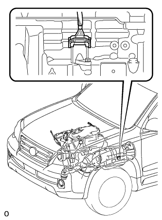

AUTOMATIC TRANSMISSION SYSTEM > MANUAL SHIFTING TEST |
| MANUAL SHIFTING TEST |
|  |
Disconnect the connector of the transmission wire.
Drive the vehicle with the transmission wire disconnected. Move the shift lever to each position to check whether the gear position changes as shown in the table below.
| Shift Lever Position | Gear Position |
| P | P |
| R | R |
| D | 4th |
Connect the connector of the transmission wire.
Clear the DTCs (Click here).